Building the hold down clamp
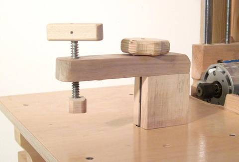{kind=link}
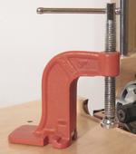 There are many options for clamping stock on the pantorouter, such as the drill press hold-down clamp shown at right.
{kind=link}
But my favourite way to clamp stock on the pantorouter is a wooden hold-down clamp that I made, using a very cheap C-clamp with a coarse thread.
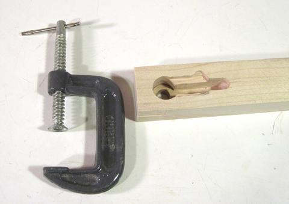 I started by milling a cavity into a piece of wood to fit around the top part of the C-clamp. Your pantorouter can be handy for milling out a slot like this.
{kind=link}
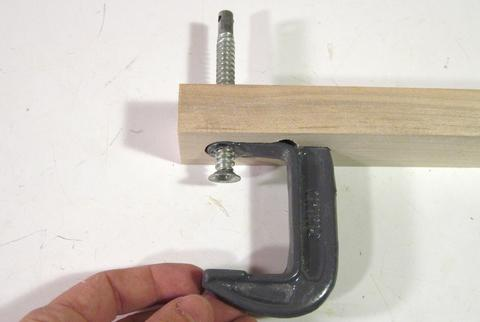 I had to remove the bar handle to fit it in the block. It took a few iterations to get it to fit perfectly. I was lucky the that paint rubbed off on the wood just a bit, so I could tell where I needed to carve away more wood after each fitting.
{kind=link}
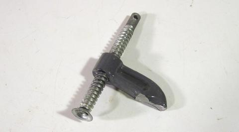 Next I hat to cut the C-clamp apart. It really wasn't a very good clamp, but I liked that it had a very coarse ACME thread, so that it doesn't take many turns to open and close it.
{kind=link}
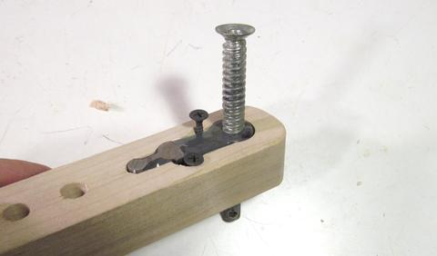 Two drywall screws next to the clamp hold it in the cavity. I originally thought I might mount it by drilling some holes in the clamp, but judging by the type of sparks I got when I cut it with an angle grinder, I realized that the steel on this clamp was relatively hard and would have been difficult to drill. Fortunately, drywall screws, with their relatively wide flat head, were able to hold it from the side.
{kind=link}
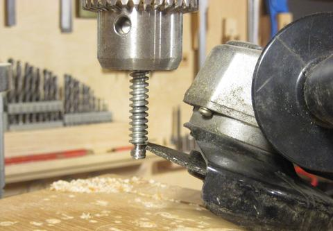 One of the reasons I didn't use that clamp much was because the end of the screw is just a piece of sheet metal. The sheet metal has sharp edges and doesn't spin freely enough, so it marks up the wood as it's tightened. At this point I was tempted to cut up one of my better clamps to avoid that problem, but I already carved out a cavity to fit this particular clamp. So I figured making a new pressure pad was the easier route.
{kind=link}
I don't have a metal lathe to shape the end of the screw. So I spun the shaft up in my drill press, and used an angle grinder to shape a knob on the end, plus a groove behind it. I'm really surprised how well this crude technique actually works!
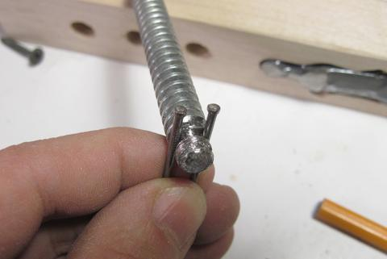 Two nails in the groove could hold the pressure pad onto the end of the screw
{kind=link}
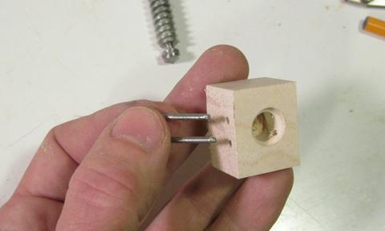 I used a block of maple for the new clamp head. Instead of two nails, I ground the head off a nail and then bent it into a U shape.
{kind=link}
There's nothing in the bottom of the pressure pad to push against the metal, it's just the end of my bolt pushing against the wood. I used hard maple, so that should help. But this hold down clamp won't see crazy amounts of pressure, so this should do.
The photo is from when I checked the fit. I rounded the corners on it after that photo was taken.
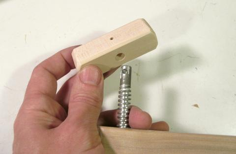 I had to destroy the original bar that served as a clamp handle to get it out. I had to take it out to be able to inset the clamp into the cavity. I also would not have been able to mount the screw in my drill press without taking the handle out. So now I had to make a new handle. I used a piece of maple, with a hole just slightly smaller than the end of the shaft. I pressed the end of it into the block and then drove a 1/8" (3 mm) diameter pin through the hole to go through the hole in the shaft.
{kind=link}
 So now I had a bar with a hold down screw on one end. This bar needs to be mounted some
distance above the work table on my machine. I made a spacer to fasten this bar
above the table.
So now I had a bar with a hold down screw on one end. This bar needs to be mounted some
distance above the work table on my machine. I made a spacer to fasten this bar
above the table.
I drilled a hole for a bolt right on the edge of the spacer block. Basically, the bolt that holds the clamp might as well be as far forward as it can be, so I'd get maximum leverage from the bolt.
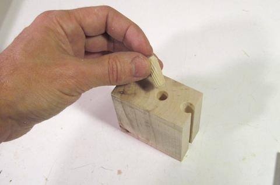 With my drill partially breaking out the front of the slot, I opened that slot along its length on the bandsaw (looks better that way). I also added a dowel pin to help align that block with the bar.
{kind=link}
The bar can be put on the block in two different positions to vary how far it extends. Mounting the bar and block on the table holds them together, so there's no need to have any other means of attaching the block to the bar.
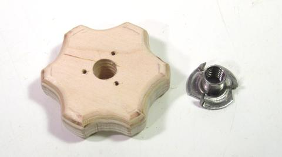 I made another knob to go on the end of the bolt that holds the hold down in place. I cut it out of 3/4" (19 mm) Baltic birch, and mounted a T-nut in it.
{kind=link}
I figured it would be best if this one had a different shape as the handle for the screw. That way, I'd be less likely to absent mindedly loosen the whole hold down when I only meant to loosen the stock.
{kind=link}
With all the work adapting the cheap Chinese clamp to make it suitable, it wouldn't be any less work to just start with a piece of 1/2" threaded rod instead. That way it would not be necessary to carve a complicated cavity for the clamp, and a simple T-nut would suffice.
Next: Using the pantorouter